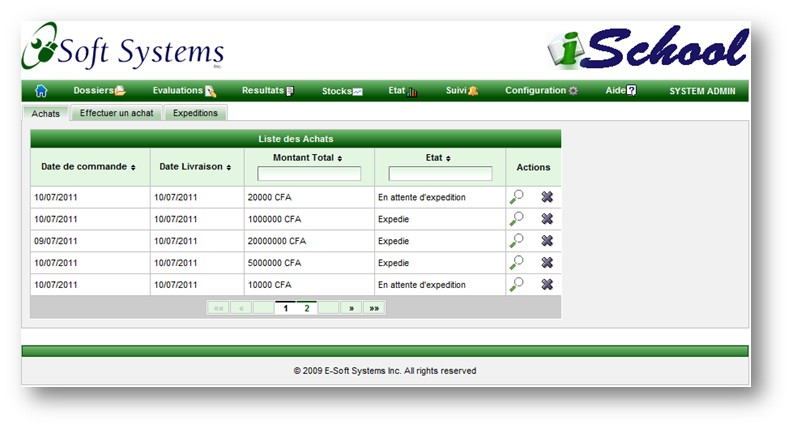
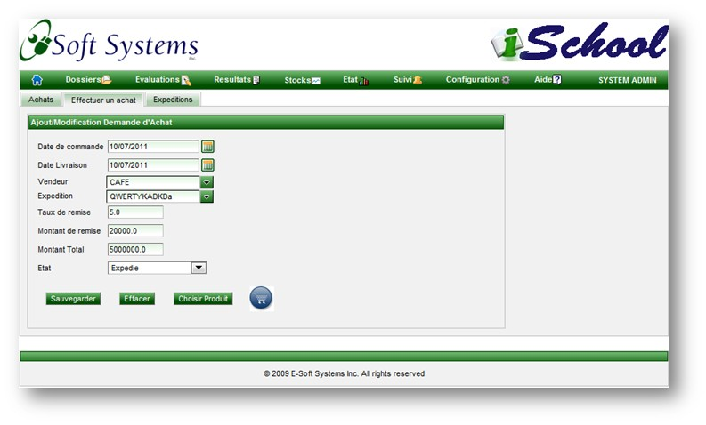
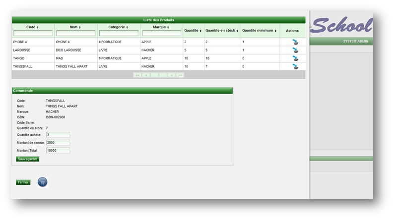
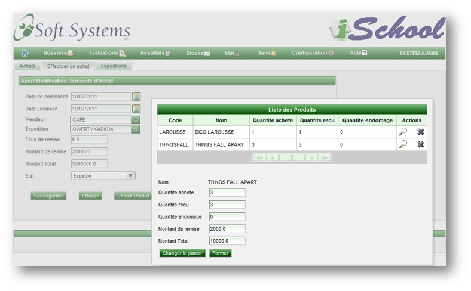
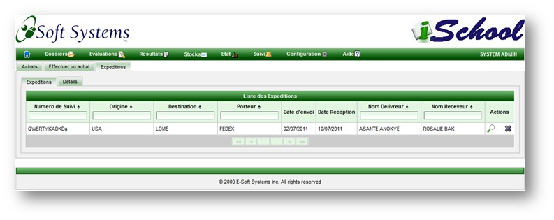
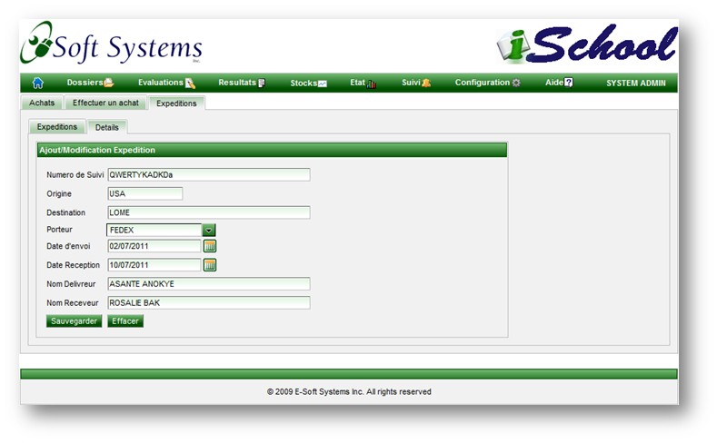

La page de commandes permet d'enregistrer les commandes, les produits, quantite et couts faisant object de ces commandes.
Elle permet egalement de suivre le progres de la commade.
Liste des commandes
La liste de commandes affiche les renseignements de base sur une commande, notamment la date de commande, de livraison, le montant total et l'etat de la commande.

Page de commandes
Cette page contient les informations de base d'une commande telles que la date de commande, de livraison,
le numero de suivi, le vendeur, le taux et montant de remise, le montant total et l'etat de la commande.
Le bouton Choisir Produit permet d'afficher la liste des produits permettant de les ajouter au panier.
Le bouton circulaire permet d'ajouter les produits au panier.
Lorsque l'etat de la commande passe a "Delivre", le stock est mis a jour.

Selection de produits et saisie de quantites et des couts.
Cette page permet d'ajouter un produit au panier.

Mise a jour du panier d'achat
Cette page permet de voir le contenu du panier et de le mettre a jour. Pour afficher cette page, il faut clicquer sur l'icone du panier.

Enregistrement des details de l'expedition
Cette page permet de voir les numeros de suivi des expeditions.

Enregistrement des details de l'expedition
Cette page permet d'enregistrer et/ou de modifier les numeros de suivi des expeditions.

Copyright © 2011, E-Soft Systems Inc